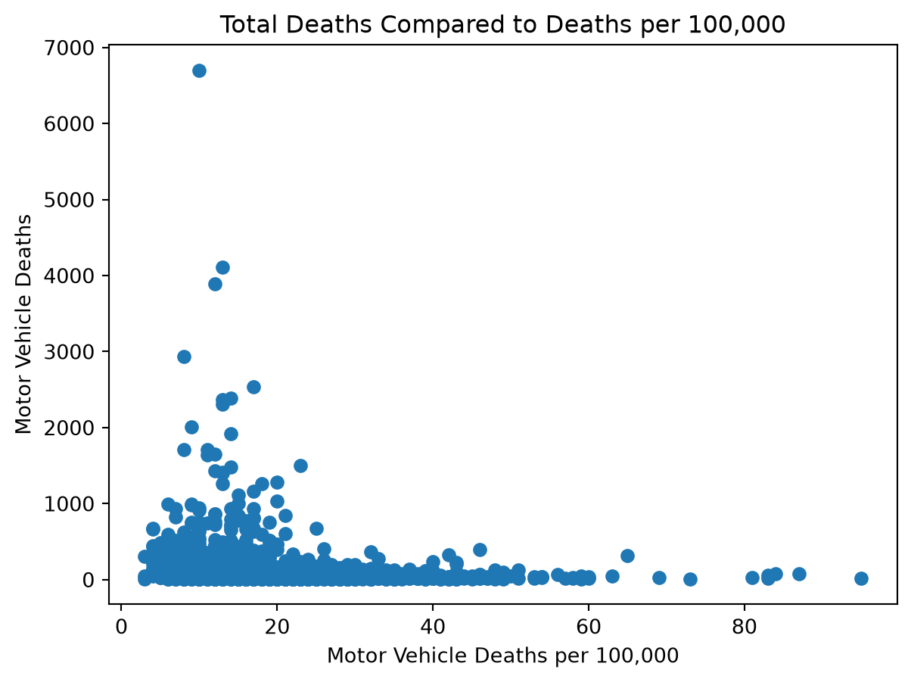
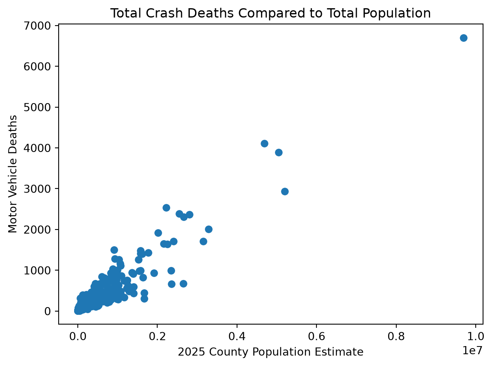
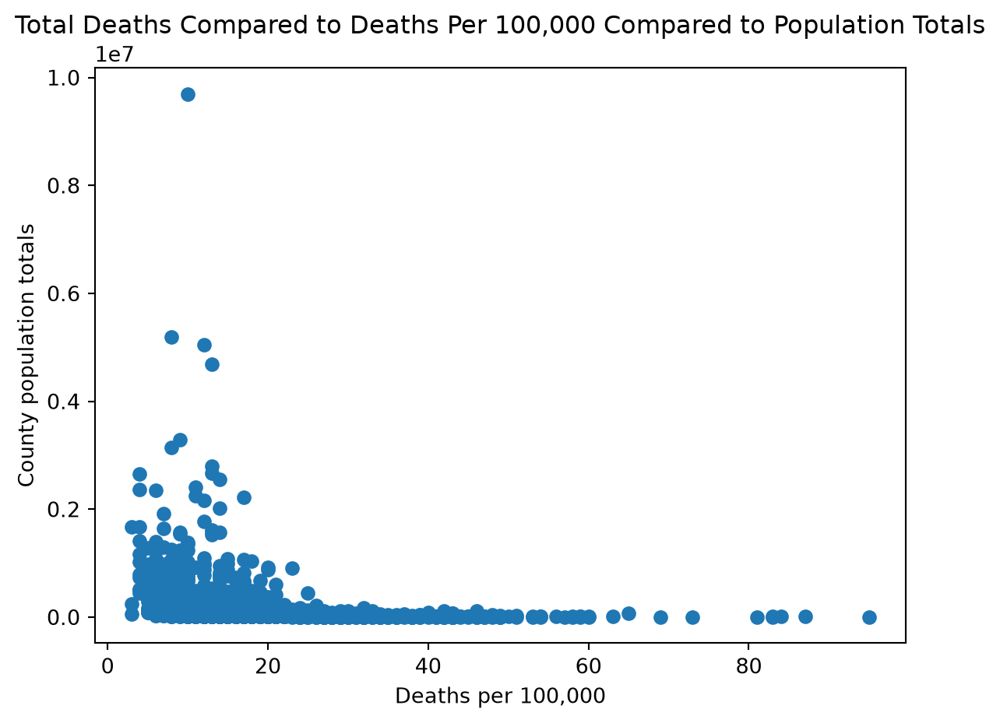

from pathlib import Path
import pandas as pd
import matplotlib.pyplot as pltCombining State Crash-Death Datasets
Python
Data Acquisition
How I combined state-level CSV county exports into one dataset.
Project overview
This blog details the process of combining cleaning and analyzing crash-death data for all continental US counties.
Preparing the data
I added a State column to each dataset, removed the state-total row, and combined the remaining county rows. I collected country-wide county-level motor-vehicle crash-death data and combined the state CSV exports into one dataset.
# create the state column and combine all the state csv files
def combine_state_data(folder):
csv_files = sorted(Path(folder).rglob("*sort.csv"))
if not csv_files:
raise FileNotFoundError(f"No CSV files found in: {folder}")
dataframes = []
for file in csv_files:
df = pd.read_csv(file)
df["State"] = df.iloc[0,0]
df = df.iloc[1:].copy()
dataframes.append(df)
return pd.concat(dataframes, ignore_index=True)Using the function above we create a combined csv called all_states. Now we almost have the data set we want. Using the .head() function we can see that there are some unhelpful columns that don’t contain data. We can go ahead and get rid of those columns.
# create the combined state data
all_states = combine_state_data("state_crash_data")
# remove columns that don't have data
all_states = all_states.iloc[:, :8]
all_states.to_csv("combined_data/all_states.csv", index=False)
original_deaths = all_states["# Motor Vehicle Deaths"].copy()
# Remove thousands separators and convert to numbers.
all_states["# Motor Vehicle Deaths"] = pd.to_numeric(
original_deaths
.astype("string")
.str.replace(",", "", regex=False)
.str.strip(),
errors="coerce"
)Preparing population data for merge
population = pd.read_excel("population_data/co-est2025-pop.xlsx") # make sure that co_est2025-pop.xlsx is in the same working directory as the file you're using to prep the combine_state_dataData analysis
For the data analysis I first looked at the top 5 counties in crash deaths. These counties are Los Angeles county California, Maricopa County Arizona, Harris County Texas, Cook County Illinois, and San Bernadino County California
all_states.sort_values(
by="# Motor Vehicle Deaths",
ascending=False
).head(5)| County | # Motor Vehicle Deaths | County Value** | Error Margin | Hispanic (all races) | Non-Hispanic Black | Non-Hispanic White | State | |
|---|---|---|---|---|---|---|---|---|
| 175 | Los Angeles | 6701.0 | 10.0 | 9-10 | 10.0 | 20.0 | 9.0 | California |
| 74 | Maricopa | 4108.0 | 13.0 | 13-13 | 14.0 | 18.0 | 12.0 | Arizona |
| 2580 | Harris | 3896.0 | 12.0 | 11-12 | 11.0 | 17.0 | 12.0 | Texas |
| 567 | Cook | 2939.0 | 8.0 | 8-8 | 7.0 | 15.0 | 6.0 | Illinois |
| 192 | San Bernardino | 2534.0 | 17.0 | 16-17 | 15.0 | 25.0 | 19.0 | California |
This code allows us to see a scatterplot of total deaths against deaths per 100,000 people
plt.scatter(all_states["County Value**"], all_states["# Motor Vehicle Deaths"])
plt.xlabel("Motor Vehicle Deaths per 100,000")
plt.ylabel("Motor Vehicle Deaths")
plt.title("Total Deaths Compared to Deaths per 100,000")
plt.show()
What would be interesting to see is how do deaths compare with the total county population. We can download the data her “https://www.census.gov/data/datasets/time-series/demo/popest/2020s-counties-total.html”. Now we can extract the most recent estimate to merge with our previous data.
population = pd.read_excel("/Users/Tyrannosaurus/Desktop/School/STAT_386/data_acquisition/population_data/co-est2025-pop.xlsx")
name_column = (
"table with row headers in column A and column headers "
"in rows 3 through 4 (leading dots indicate sub-parts)"
)
# Extract everything after the comma into a state column
population["State"] = (
population[name_column]
.str.extract(r",\s*(.+)$", expand=False)
.str.strip()
)
# Clean the county name
population["County"] = (
population[name_column]
.str.replace(r"^\.", "", regex=True)
.str.replace(r",.*$", "", regex=True)
.str.replace(r"\s+County$", "", regex=True)
.str.strip()
)
# Remove the unwanted rows
population = population.drop([0, 1, 2, 3], axis=0)
#keep only the most recent population estimate and the county
population = population.drop(
['table with row headers in column A and column headers in rows 3 through 4 (leading dots indicate sub-parts)',
'Unnamed: 1', 'Unnamed: 2', 'Unnamed: 3', 'Unnamed: 4',
'Unnamed: 5', 'Unnamed: 6'],
axis = 1
)
population = population.rename(
columns={"Unnamed: 7": "2025 population estimates"}
)
from posixpath import join
# final data merge add the population data to the combined crash data
combined_data = all_states.merge(
population[["County", "State", "2025 population estimates"]],
on=["County", "State"],
how="left",
validate="many_to_one",
indicator=True
)Now let’s look at plot of the total deaths by population total and see if we can pick out any differences or trends compared to total deaths by deaths per 100,000. This gives us a more linear trend and relationship.
plt.scatter(combined_data["2025 population estimates"], combined_data["# Motor Vehicle Deaths"])
plt.xlabel("2025 County Population Estimate")
plt.ylabel("Motor Vehicle Deaths")
plt.title("Total Crash Deaths Compared to Total Population")
plt.show()
It looks like there’s a somewhat positive correlation between population and total crashes. One last thing to look at, how does deaths per 100,000 compare to total overall deaths
plt.scatter(combined_data["County Value**"], combined_data["2025 population estimates"])
plt.xlabel("Deaths per 100,000")
plt.ylabel("County population totals")
plt.title("Total Deaths Compared to Deaths Per 100,000 Compared to Population Totals")
plt.show()